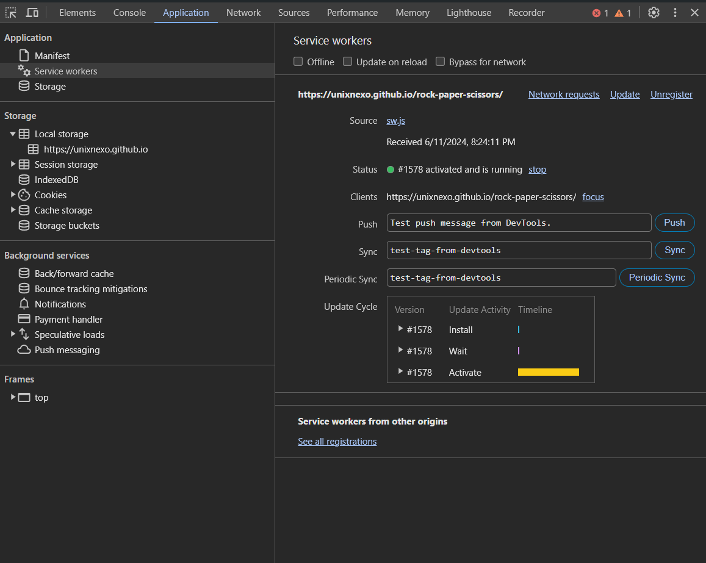

Short
web stuff
To demonstrate, I'm going to show you how to add some static pages to service workers.
const CACHE_NAME = 'STATIC_ASSETS_v1';
const addResourcesToCache = async (resources) => {
const cache = await caches.open(CACHE_NAME);
await cache.addAll(resources);
}
const cacheMatch = async (request, preloadResponsePromise) => {
const isOnline = navigator.onLine;
// If the user is online, fetch the resource from the network
if (isOnline) {
try {
const networkResponse = await fetch(request);
// If the network response is successful, cache it and return
if (networkResponse && networkResponse.ok) {
const cache = await caches.open(CACHE_NAME);
await cache.put(request, networkResponse.clone());
return networkResponse;
}
} catch (err) {
return null;
}
}
// If the user is offline or network fetch fails, try to find a cached response
const cachedResponse = await caches.match(request);
if (cachedResponse) {
return cachedResponse;
}
if (isOnline) {
return null;
}
// If user is offline and no cached response is found, return a fallback response
return new Response("You are offline and there's no cached version of this resource.", { status: 503 });
}
self.addEventListener("install", (event) => {
self.skipWaiting()
event.waitUntil(addResourcesToCache([
'./index.html',
'./css/output.css',
'./js/script.js',
'./js/auto-animate-formkit.js',
'./public/img/paper.webp',
'./public/img/rock.webp',
'./public/img/scissors.webp'
]))
})
self.addEventListener("activate", event => {
event.waitUntil(clients.claim().then(() => console.log("SW has claimed all the clients")))
event.waitUntil(async () => {
if (self.registration.navigationPreload) {
await self.registration.navigationPreload.enable();
}
})
})
self.addEventListener("fetch", (event) => {
event.respondWith(cacheMatch(event.request, event.preloadResponse))
})
const registerServiceWorker = async () => {
if ("serviceWorker" in navigator) {
try {
const registration = await navigator.serviceWorker.register("./sw.js")
registration.addEventListener("updatefound", () => {
console.log("New worker being installed => ", registration.installing)
})
if (registration.installing) {
console.log("Service worker installed");
} else if (registration.active) {
console.log("Service worker active!");
}
} catch (err) {
console.log("Registration failed")
}
} else {
console.log('service worker not supported');
}
}
registerServiceWorker()
You can also check whether it's gone successful or not by opening

I'm not going to explain all of these, but I recommend you reading these for further understanding:
web.dev - service workers